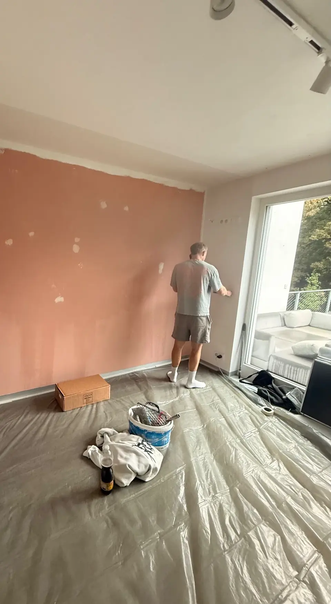
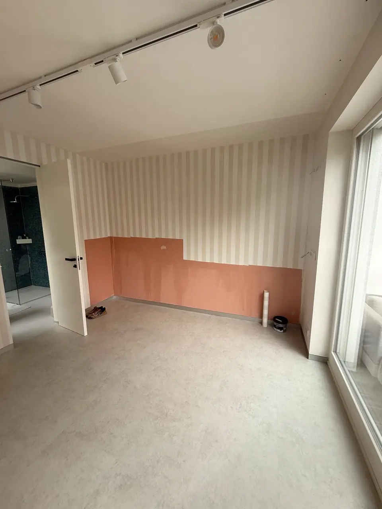
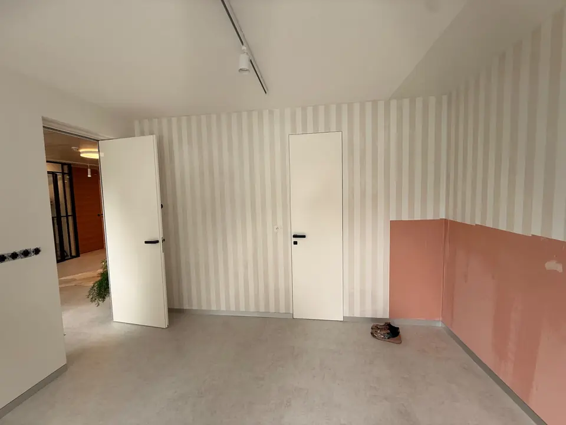
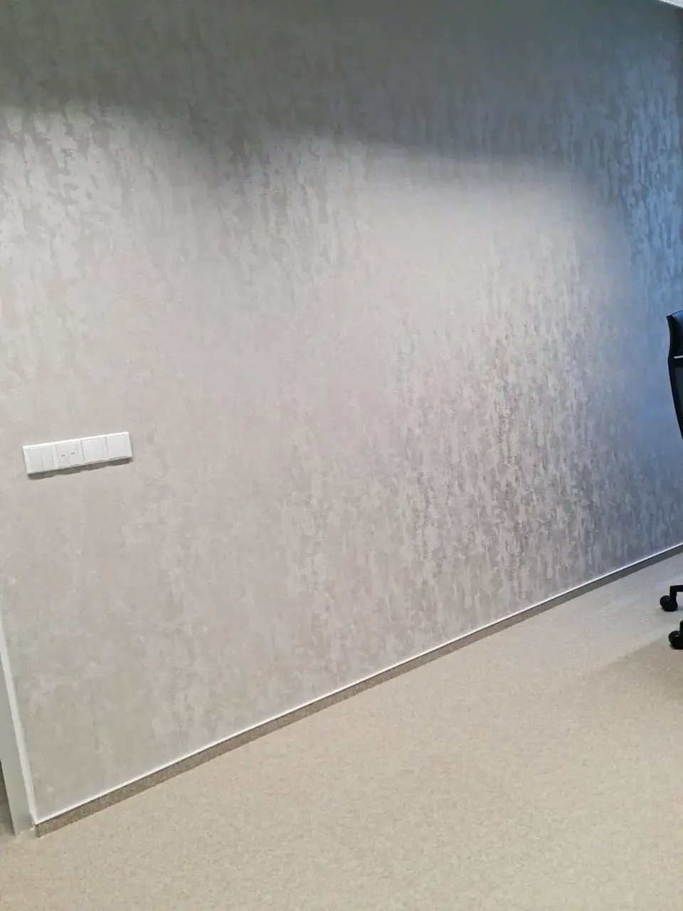
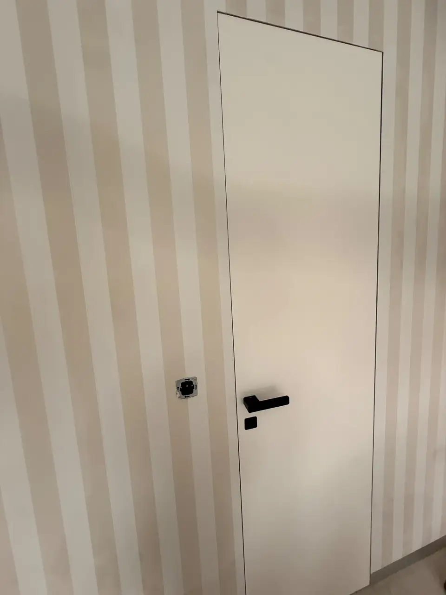
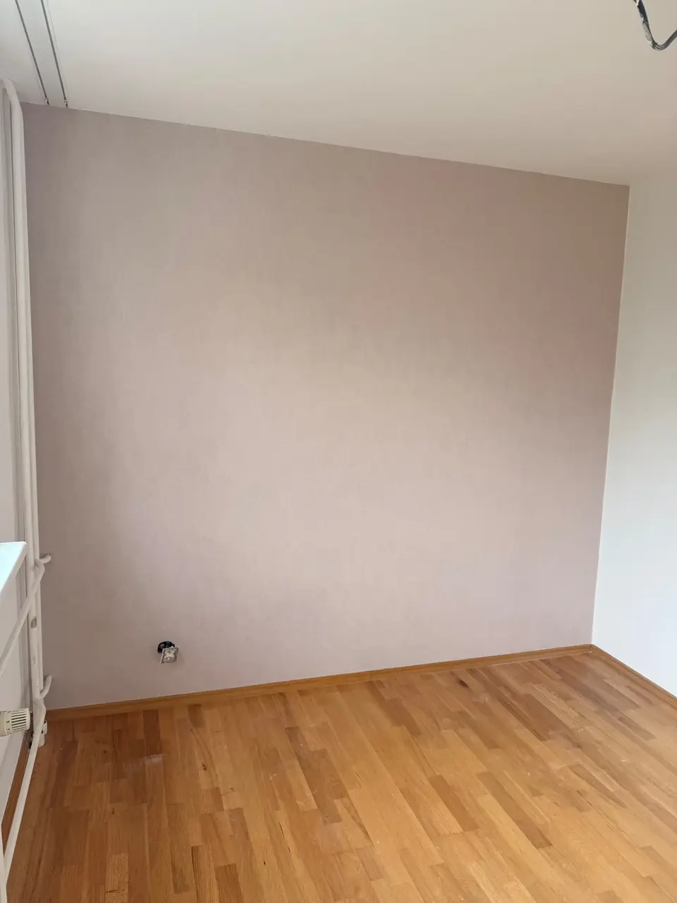
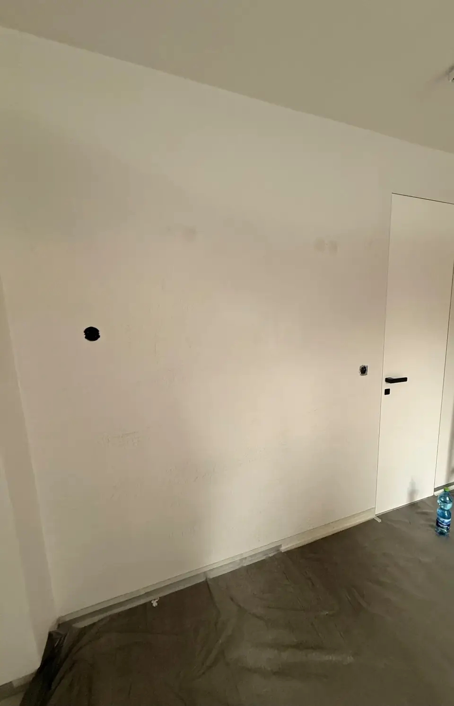

Tapetování Brno
Tapeta, na které nejsou vidět spoje. Připravíme stěnu, navážeme vzor a dotáhneme rohy. Tapetu můžete mít už koupenou. Po práci uklidíme.
- 5,0 z 29 recenzí na Googlu
- Ozveme se do 24 hodin
- Brno a okolí do 20 km


PředPoTapetování, dětský pokoj · Brno · Jundrov. Posuňte pásku a porovnejte.
Tapety, které jsme lepili
Svislé pruhy jsou nejpřísnější zkouška: každý křivý pás je vidět. Fotky jsou z našich zakázek.




Pokoj v Jundrově krok za krokem
Jedna zakázka: příprava stěny, napojení pruhů kolem dveří a hotový pokoj.
Projdeme tapetu
Typ, vzor, rozměry stěn a členitost prostoru. Pro cenu stačí fotka a odkaz na tapetu.

Připravíme stěnu
Posoudíme podklad a domluvíme vyrovnání. Podlahu zakryjeme.
Lepíme pás po pásu
Navážeme vzor a čistě zakončíme okraje kolem dveří.
Zkontrolujeme celek
Projdeme spoje, rohy a hotový povrch. Uklidíme.
Co je v ceně tapetování
Cenu počítáme podle plochy a tapety. Příprava stěny i úklid jsou v ceně, kterou vám předem potvrdíme.
- Posouzení a příprava stěnyPřed lepením posoudíme stěnu a domluvíme vyrovnání, aby nerovnosti nebyly vidět.
- Napojení vzoruPásy pečlivě napojíme a čistě zakončíme kolem rohů a okrajů, i u fototapet.
- Kontrola celkuNa konci projdeme spoje, rohy a dokončený povrch.
- ÚklidKdo si s vámi tapetování domluví, ten ho i udělá. Po práci uklidíme.
- Tapeta[doplnit: kupuje ji zákazník, nebo ji umíte zajistit?]
- Lepidlo[doplnit: je lepidlo v ceně práce?]
Kolik stojí tapetování
[doplnit: od … Kč/m² práce, tapeta zvlášť, doplní majitel]
Pošlete fotku stěny, rozměry a typ nebo odkaz na tapetu. [doplnit: ceny s DPH, nebo bez?]
Chci cenu tapetování- Plocha a tvar stěnmetry čtvereční, rohy, okna a výklenky
- Typ tapetyvliesová, vinylová, klasická nebo fototapeta
- Návaznost vzoručím výraznější vzor, tím víc napojování
- Stav podkladurovinnost a vyrovnání před lepením
Co píšou zákazníci
„Velice spolehlivý a šikovní kluci, kteří odvádí skvělou práci. Jednoznačně doporučuji. Umí skvěle i tapety.“
★★★★★ Jan M., recenze na Googlu
Hlavní recenze zmiňuje tapety, ostatní celkovou spolupráci. Recenze přebíráme doslova, jen bez emoji. Všechny jsou na profilu firmy na Googlu.
Profesně i lidsky skvěle odvedená práce. Všechno perfektní. Předáno čisté a poklizené. Děkuji!
Skvělá spolupráce od začátku do konce. Rychlá a bezproblémová domluva, spolehlivý přístup a kvalitně odvedená práce. Jednalo se již o naši opakovanou spolupráci a opět jsme byli maximálně spokojeni.
Vše proběhlo podle dohody, kvalitní práce, velmi pohodová parta, co odvede svoji práci.
S panem Honzou jsem byl velmi spokojený. Dostal jsem na něj kontakt na doporučení a nezklamal. Výborná domluva a vždy vyšel vstříc. Za ty peníze to stojí!
Kolik stojí lepení tapet?
Cena závisí na typu tapety, návaznosti vzoru, ploše, členitosti stěn a stavu podkladu. Pošlete fotku stěny, rozměry a typ tapety a připravíme nezávaznou cenu.
Můžeme mít tapetu už koupenou?
Ano. Pošlete její typ nebo odkaz a rozměry stěny, probereme provedení a množství.
Lepíte i fototapety?
Ano. Přípravu a postup přizpůsobíme konkrétní tapetě a podkladu.
Je potřeba stěnu připravit?
Většinou ano. Stav stěny posoudíme podle fotek nebo na místě a vyrovnání domluvíme předem.
Strháváte i starou tapetu?
[doplnit: ano / ne, a jestli je to v ceně]
Jak dlouho tapetování trvá?
Záleží na ploše, členitosti stěn a přípravě podkladu. Délku práce potvrdíme spolu s cenou.
Pošlete fotku stěny a tapety
Nacenění je zdarma a nezávazné. Termín, který domluvíme, dodržíme.
+420 774 927 182- Střed
- Žabovřesky
- Královo Pole
- Líšeň
- Bystrc
- Bohunice
- Židenice
- Komín
- Starý Lískovec
- Modřice
- Šlapanice
- Kuřim
- Rosice
- Slavkov u Brna